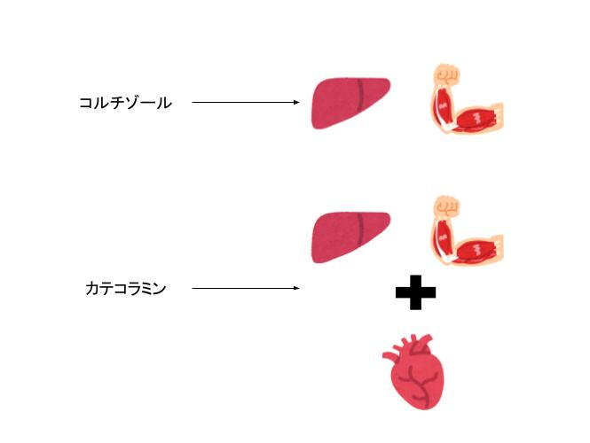

目標
- 侵襲により血糖が上がるメカニズムを述べることができる
Summary
- 侵襲を受けると、神経・内分泌系がどのように反応し、身体にどのような影響が生じるのかを学びます
- 「交感神経ー副腎髄質系」「視床下部ー下垂体前葉ー副腎皮質系」を学びましょう
- 血糖が上がるメカニズムを学びましょう
神経・内分泌反応で抑えてほしい２つの系統
このパートでは、侵襲が糖代謝に及ぼす影響を学んでいきましょう。
神経・内分泌系の反応は一見複雑で、苦手意識を持ちやすい人も多くいるかと思います。
ですが、ここで抑えてほしいメカニズムは大きく２種類です。下の図を眺めてみてください。

図のように2つの系統を抑えましょう。
1つ目が視床下部ー下垂体ー副腎皮質系、2つ目が交感神経ー副腎髄質系です。
では1つずつみていきましょう。
視床下部ー下垂体ー副腎皮質系
こちらは主に副腎皮質に関連した内分泌です。特にコルチゾールを覚えましょう！
| ホルモン |
特徴 |
| 成長ホルモン |
下垂体前葉から分泌され、主にタンパク質・糖質・脂質に作用し、タンパク合成を促進する。 |
| コルチゾール |
肝臓での糖新生・筋でのタンパク分解など代謝系に作用する。また循環を維持する作用もある。 |
| アルドステロン |
腎臓でのナトリウム再吸収を促進し、体液を維持しようとする。 |
交感神経ー副腎髄質系
こちらは自律神経、なかでも交感神経に関連した内分泌です。
| ホルモン |
特徴 |
カテコラミン
（アドレナリン・ノルアドレナリン） |
心拍数増加・血管収縮作用により、心拍出量・血圧を上昇させ、臓器血流を増加させる。また、代謝系に対して、グリコーゲンの分解や糖新生促進によりエネルギー動員を促し、インスリン分泌抑制により血糖上昇を引き起こす。 |
ここで抑えてほしいのは、コルチゾールとカテコラミンがどこに作用して、どんな反応が起こるのかです。
２つとも肝臓・筋肉に作用して、侵襲を受けてもホメオスタシスを維持できるよう、エネルギー源を作り出します。
またカテコラミンは、心臓や血管に作用し、循環を維持できるように働きかけます（そのため心拍数・血圧↑）。

血糖が上昇するメカニズム
なんだか覚えることがたくさん出てきましたね。
分かりやすいように、図で表してみましょう。
まず青い枠で囲んである１・２ー１・２−２に注目してください。
先ほど学んだ「視床下部ー下垂体ー副腎皮質系」と「交感神経ー副腎髄質系」により分泌されたホルモンが指令を出します。
その結果、「糖新生」と「インスリン抵抗性の亢進（カテコラミンの作用による）」の２つが生じます。

ここで「発熱」のパートを思い出してみましょう。
人間の身体は侵襲を受けると、体温を上げるということを学びました。
体温が上がるということは、白血球のはたらきが活性化するだけでなく、全身の機能が普段より活発に動き始めます（例えばPCもずっと使っていると熱くなったりしますよね？）。
侵襲を受けた身体がホメオスタシスを維持するには、それだけエネルギーをたくさん必要とします。
内分泌によって起こる反応は色々とありますが、どちらのシステムも共通し言えるのは、「血糖値を上げようとしている」ということです。
血糖を上げることで、侵襲に対応するためのエネルギー源を作ろうとするんですね。人間の身体はよくできてますね。

ただその代償として、筋肉や脂肪が使われてしまうので、強い侵襲を受けたあとは「体重が減る」「手足が細くなる」ということが生じます。
ここまでいかがでしたでしょうか？
知識が身についたか確認するために、確認テストにトライしてみましょう！
テストはどうでしたか？
テストにクリアできたら、次の第5章に進みましょう！